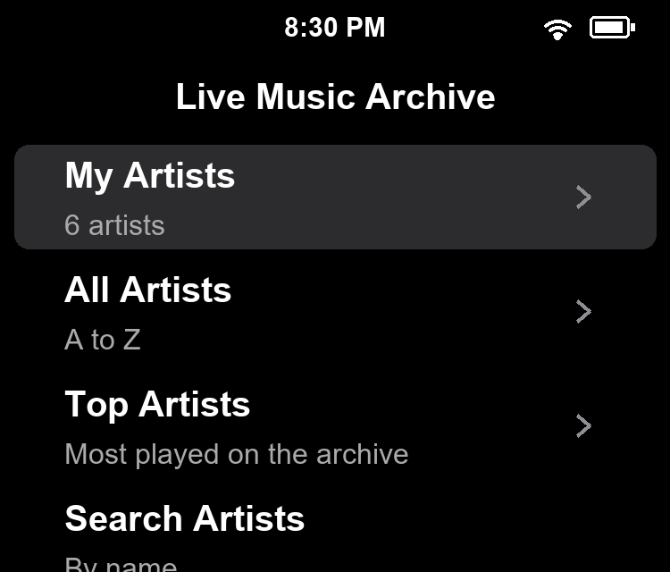
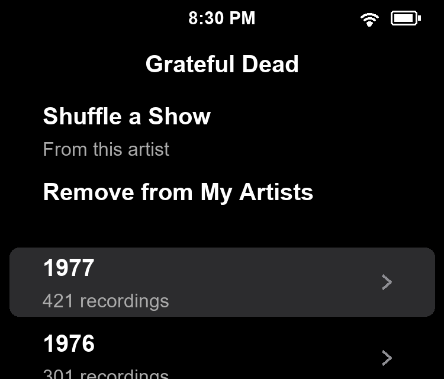
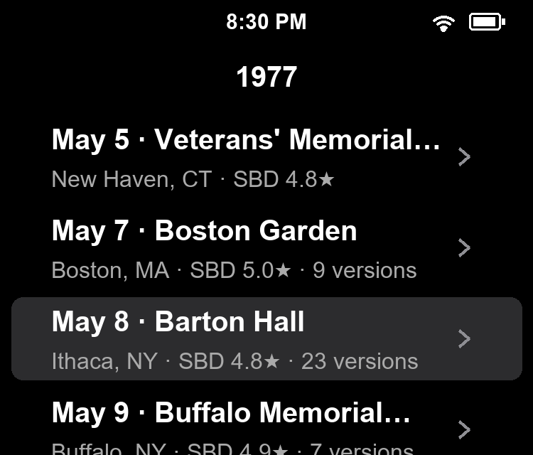
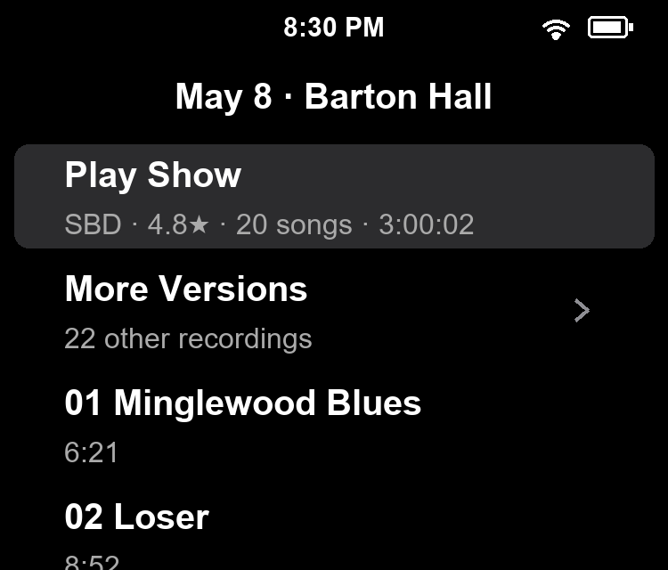
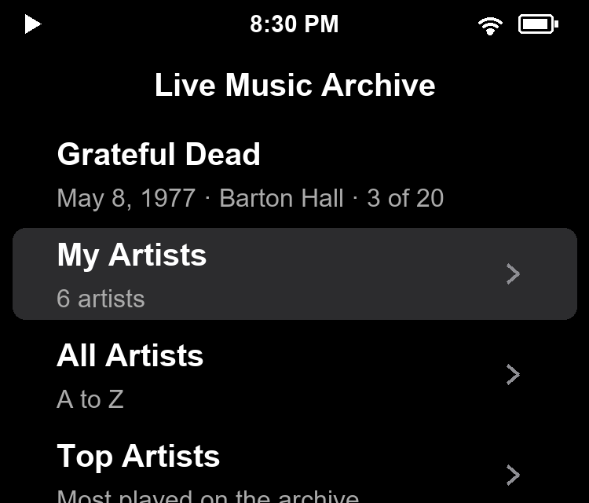
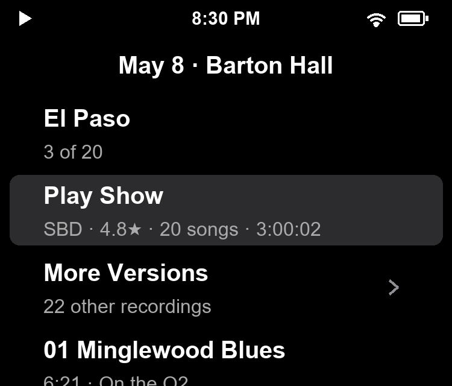
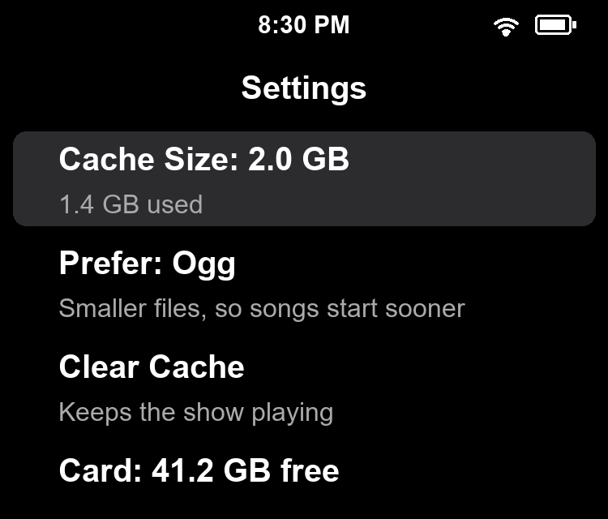

Install Live Music Archive and find your way around its menu.
Streaming → Live Music Archive streams concerts from the Internet Archive’s Live Music Archive over Wi-Fi: thousands of artists who allow taping, from the Grateful Dead to bands touring today. Choose an artist, a year and a show, and the best recording plays. It isn’t in the firmware: it runs from the microSD card (see “Installing Live Music Archive”, below).
You need Q2 Pod 1.6.0 or later.
q2-lma-*.zip from github.com/harpmudd/q2-lma/releases/latest..lma folder. On macOS and Linux the leading dot hides the folder; Cmd+Shift+. shows it in Finder.Or, over Wi-Fi: System settings → App Store → Live Music Archive downloads and installs it.
Open Streaming → Live Music Archive. It needs Wi-Fi.

The menuPick an artist, a year and a show. The best recording plays.
An artist’s page starts with Shuffle a Show, for one of their shows at random, and Add to My Artists (or Remove). Then come their years, newest first, with how many recordings each has.
A year lists its shows by date. Each row has the venue, then the city, the best recording’s source and rating, and how many versions there are:

An artist’s page
A year’s showsThe source says how it was taped: SBD (soundboard), Matrix (soundboard and audience mixed) or AUD (audience). Soundboard recordings play first, then matrix, then audience, best rated first.
A show’s page starts with Play Show, which plays it from the start. Its detail is the recording that plays: source, rating, songs and length. More Versions lists the show’s other recordings; the one you pick plays from then on. Below come the songs: pick one to start the show there.

A show’s page| Control | What it does |
|---|---|
| Centre | On an artist, year or show, opens it; on Play Show or a song, plays the show |
| Hold Play/Pause | On an artist, saves it to My Artists, or removes it when it’s already there |
| Return | Goes back a level |
The menu and the show’s page open with a row saying what plays: on the menu the artist, then the date, the venue and the song (3 of 20); on the show’s page the song’s name. While a song downloads, it says how far along it is.

The menu
The show’s pageNow Playing shows the artist, the show’s date and venue as the album, and its cover art, or the Live Music Archive llama when a show has none.
A song downloads whole before it plays, so a long first song takes a moment; the next ones download while you listen. A song already on the card says On the Q2. The Q2 doesn’t go into Standby while a song downloads.
Hold Play/Pause on any artist, in any list or in search, to save it to My Artists; hold it again to remove it. Shuffle a Show on the menu picks from them.
You can also edit the list on a computer: it’s my-artists.txt in the card’s .lma folder, one artist a line. An artist is the end of its archive.org address, such as GratefulDead from archive.org/details/GratefulDead:
GratefulDead WidespreadPanic moe
Keep shows on the card, and find out what went wrong.
Played shows stay on the card, so replays start at once.

SettingsThe page also shows the card’s free space and the app’s version.
Live recordings don’t match Last.fm’s albums, so with Q2 Pod 1.6.5 or later, shows stay out of your scrobbles. They still count as plays. To scrobble them, delete the scrobble=0 line from .lma/q2app on the card; updating the app puts it back.
To update, unzip a newer release over it, or choose Update in the App Store. My Artists, your settings and saved shows stay.
To remove it, delete the .lma folder. Removing it in the App Store deletes the same folder, with My Artists and the saved shows.
my-artists.txt doesn’t name an archive.org artist. Fix or remove it..lma/log.txt on the card.Getting help: report a problem at github.com/harpmudd/q2-lma/issues, with what you did, what happened, and .lma/log.txt from the card.
Live Music Archive for Q2 Pod is an independent project and is not affiliated with, endorsed by or sponsored by the Internet Archive or Shanling. The Live Music Archive and its llama logo belong to the Internet Archive; the shows belong to the artists and tapers who share them. Shanling and Q2 are trademarks of Shanling. Screens in this guide are mockups drawn from the app’s own pages, so your theme may look different. This guide follows the design of the Q2 Pod User Guide by Diamond Bond. The app and this guide are released under the MIT License.